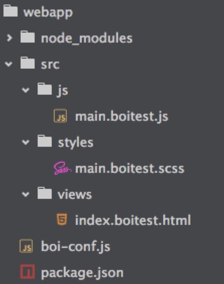

boi脚手架
使用boi脚手架工具可以快速创建一个完整的boi项目。目前版本（v1.2.0）的脚手架工具比较粗糙，只根据到家FE团队的具体需求提供了三种可选项目类型：
- normal： 常规项目。不限制技术选型，用户可根据自身需求选择任意框架和第三方库；
- vue-thirdparty：将vue作为第三方库单独引入。简单说就是vue.js不参与编译，在html文档中使用
script标签单独引入； - vue-inline：将vue作为一个模块使用。在项目代码中
require、import或其他模块化方案加载vue，vue参与编译。
创建项目
使用以下命令创建一个boi项目：
boi new webapp
上述命令会在当前目录创建webapp目录。如果想在已存目录下创建项目，可以使用以下命令：
boi new .
或者
boi new
执行上述命令后，boi会提供几个可选项进行项目定制：
自定义项目名称，默认项目名称为app：
? Give your app a nice name (app)选择项目类型：
? Give your app a nice name boitest ? Choose the type of your project (Use arrow keys) ❯ normal vue-thirdparty vue-inline选择npm第三方依赖：
? Give your app a nice name boitest ? Choose the type of your project normal ? Which modules do you want (Press <space> to select, <a> to toggle all, <i> to inverse selection) ❯◯ vue ◯ vue-router ◯ zepto确认
? Give your app a nice name boitest ? Choose the type of your project normal ? Which modules do you want vue, vue-router ? Ready to go? (Y/n)确认后，boi会根据定制选项自动安装npm第三方依赖：
├── vue@2.0.1 └── vue-router@2.0.0
执行成功之后，生成的初始化目录结构如下： 
其中boi-conf.js是boi框架的配置项，点击这里查看详细配置。